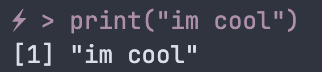
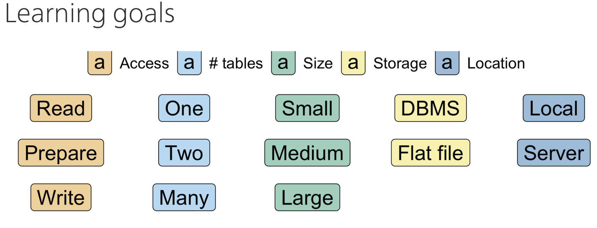
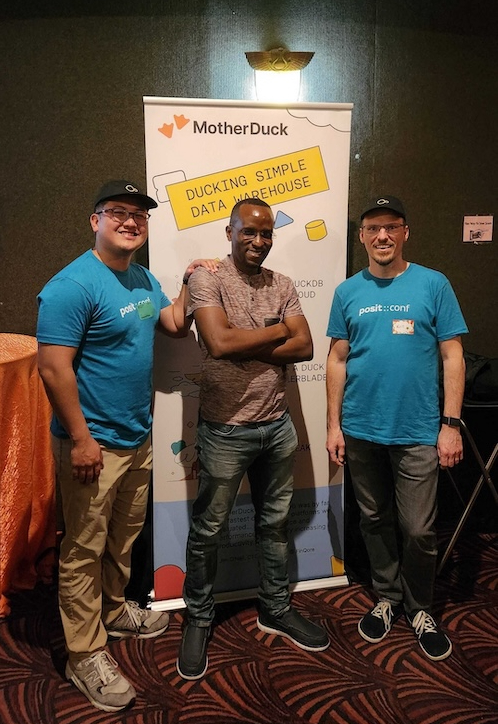
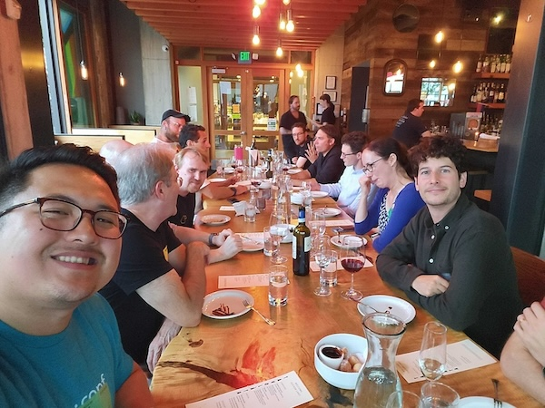

Overview
This is a quick and dirty report/recap on my experience attending Posit 2024 and presenting at DuckCon 2024 in Seattle,WA from Aug 11-16, 2024.
TLDR: I enjoyed meeting many amazing people, learned a lot , Seattle is very bonita.
Posit 2024: “Databases with R” workshop
Highlights
- Use
.byinsummarize()to avoid usinggroup_byandungroupwhich many people forget Jetbrains Monofont- Pretty font for Rstudio!
<- |> !=are rendered into nice glyphs!
- Pretty font for Rstudio!
gaborcsardi/prompt- a package for pimpin’ your R console. I added a lightning bolt to mine because I’m cool like that.
prompt::set_prompt('⚡ > ')- 
ddotta/parquetize- This R package contains handy functions to export data from a variety of sources into .parquet files! It has convenient arguments to accommodate memory limitations and other constraints that can be very useful
{arrow}and{duckdb}already offer ways to do this but there are several args that{parquetize}supports that these don’t
- This R package contains handy functions to export data from a variety of sources into .parquet files! It has convenient arguments to accommodate memory limitations and other constraints that can be very useful
exasoldatabase- We did not cover this database in the workshop, but I learned about it for the first time here (even though it’s been around for quite some time).
cynkra/constructive- Kirilll used
constructive::construct()to print out the contents of an R object that contained SQL. It parsed the SQL into the console nicely. I had never heard ofdputbefore this butconstructsupposedly achieves similar functionality. seems handy for objects that have a lot of SQL in it.
- Kirilll used
- CORA dataset
- Public dataset in MariaDB with plenty of examples of primary and foreign keys and good ‘data modeling’.
- This dataset was covered as an example of how to access a DB through R/DBI with credentials.
r"()"- Beginning with R 4.0, you can use the following syntax
r"()"to construct raw string literals, this can be handy when writing SQL as alternatives to use{glue}(one less dependency) orpaste0(). You don’t have to escape special characters like/or\which can be especially handy for writing file paths.
- Beginning with R 4.0, you can use the following syntax
- … much more that I do not have time to cover in this post. Check out the excellent lecture material at the link above.
Closing thoughts
- Despite covering a lot of material, this workshop was great. I thought it was well organized and informative. I learned a lot despite already knowing a bit about databases/R. Kirill included several visualizations of the concepts we were learning which made it easier to appreciate how they built on top of each other (one example shown below)! 
- There were several exercises that were included in the workshop that can be found on the Github repo. I thought these were quite helpful and recommend trying these out to refresh your knowledge on the many different ways to interact with databases in R. Oftentimes there are many ways to do the same thing.
DuckCon 2024
When I wasn’t attending posit, I was spending all of my time preparing for my lightning talk at DuckCon2024. I will write a dedicated blog post (and preprint) on this topic very soon, so stay tuned! But here are some of my quick thoughts.
Summary
I had an amazing time at DuckCon. The speakers were great and the venue was really impressive – the screen was huge! After the talks, everyone was invited to gather in the venue for drinks and snacks. I was approached by several kind people and was overwhelmed by how many were interested in my talk. I want to again thank everyone for their interest and I hope to share more on our work very soon.
Highlight
- Earlier in the week at the Posit Databases Workshop, I invited Kirill to my DuckCon talk. Unfortunately, he mentioned that there was a conflict with an R tidy event and so he would not likely be able to attend. To my surprise, I found Kirill after my talk at DuckCon! We managed to find some time to chat outside and I really enjoyed being able to discuss our projects in more detail. I thanked him for all of the incredible contributions he has made to R (i.e. maintaining the duckdb-r repo, creating duckplyr, and much more related to his work leading cynkra).

Old friends, new friends, and celebrities
New Friends
I’ve always wondered why academics enjoy attending conferences so much. After attending posit conference, I can now say with confidence that the best part is bumping into other people from other walks of life and learning about their unique background and shared interests. I was lucky to have such an experience when randomly meeting Jeroen Huyghe, a principal staff scientist at Fred Hutch who does some exciting research on spatial omics and cancer. Jeroen and I bonded over our shared interests in spatial omics at Posit conf and I’m very grateful to have had the opportunity to have lunch with him and learn about his experiences in the spatial omics field, working at Fred Hutch, and discussing the need for better methods for spatial omics analysis. It was a pleasure meeting you Jeroen, hope we can cross paths again in the future!
Old Friends
At the Posit databases workshop, I had the opportunity to connect with Nick Giangrecco, an old friend and mentor of mine from my good ol days at Columbia. It was great to spending time with you Nick, learning more about our shared interests with DuckDB, and catching up over dumplings. Hope to see you again soon!
It was also great to see Tyrone Lee at both Posit and DuckCon. Thanks Tyrone for your encouragement ahead of my DuckCon talk and for the helpful suggestions.
Celebrities
In this section I fanboy over some of the amazing people that I met at Posit and DuckCon. Apologies if I forgot to mention you.
Posit Conf
In the databases workshop, I was surrounded by several R celebrities including Eric Nantz (https://r-podcast.org/host/enantz/) and Tyler Morgan Wall (https://www.tylermw.com/), among many others! I was also lucky to have sat besides Joe Chang, Hadley Wickham, and JJ Allaire at lunch!
DuckCon
- Hannes Mühleisen and Mark Raasveldt, Co-founders of DuckDB.
- I was very fortunate to meet Hannes and Mark before and after the DuckCon talks. I regret not talking more about DuckDB internals with them, but I hope to meet you again soon Hannes and Mark!
- Jordan Tigani, CEO of MotherDuck
- I was lucky to have sat beside Jordan at DuckCon. I got to pitch a few ideas to Jordan about doing matrix arithmetic with Motherduck, and hear more about the recent pivot from ‘hybrid execution’ to ‘dual execution’. Shoutout to Frances Perry from Motherduck who gave a great talk, showcasing several new features with Motherduck that I’d like to soon try out.
- Dominik Moritz, creator of Mosaic and Prof at CMU
- Briefly met Dominik outside of the venue, huge fan of his work and hope to soon support ways to use Mosaic with
dbverseobjects
- Briefly met Dominik outside of the venue, huge fan of his work and hope to soon support ways to use Mosaic with
- And several others…

Next steps
- Road to v0.1
- We released
dbMatrixanddbSpatialat DuckCon2024 as ‘developer previews’ with much work yet to do. Below are some changes I will be working on in the coming weeks towards our first 0.1 release. - Release
dbDatadbDatawill contain shared helper functions acrossdbverseobjects (e.g. caching and savingdbverseobjects).- I’m also excited to explore inheriting
duckplyrindbData- Issue #86 in
duckplyrwas recently resolved by Kirill. Now, users can take existingtbl_dbiobjects and convert them into theduckplyrframework viaas_duckplyr_tibble()!
- Issue #86 in
dbMatrix- Stabilize
Arith()andOps()methods - Support div by 0 operations
- Update show() methods
- Stabilize
dbSpatial- S7 rewrite (TBD)
- We released
dbversepreprintGiottoDB- WIP: drieslab/GiottoDB